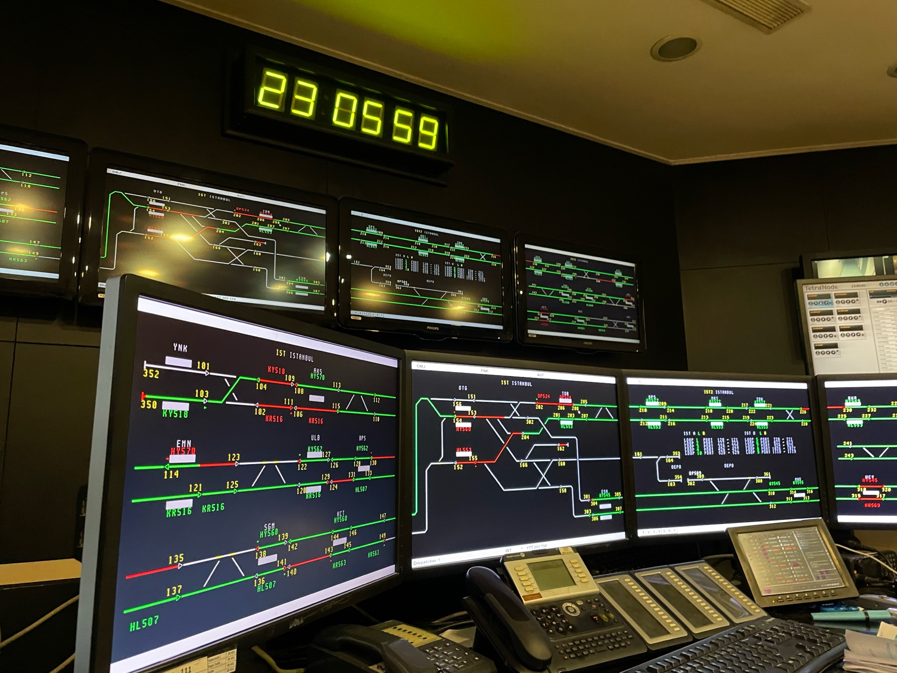

Web-based simulation of the EBICOS 900 traffic management and dispatching system
The system in the Istanbul M1 metro line runs in 4 screens at the same time in reality. Since this is not possible for every user of the simulation, some optimizations are made.
 Real EBICOS installation on the lineH stands for horizontal and displays the entire line horizontally. This is useful for wider and multiple displays.
W stands for wrap and displays the line in two rows. This is useful when you're using a normal screen and want to see all of the track objects.
This screen displays the Yenikapı, Aksaray, Emniyet, Ulubatlı, Bayrampaşa, Sağmalcılar and Kocatepe stations.
This screen displays the Otogar, Terazidere and Esenler stations.
This screen displays the Davutpaşa, Merter, Zeytinbunu and Menderes stations.
This screen displays the Bakırköy, Bahçelievler, Ataköy, Yenibosna, Dünya Ticaret Merkezi, Havalimanı, Üçyüzlü, Bağcılar and Kirazlı stations.
You can click the Date & Time Window to switch to full screen mode.
When needed, the system can display an error message regarding to the last command here. Writing anything on the terminal will delete the message being shown.

Commands are written to the terminal, which is found at the bottom right of the screen. More info can be found in the Commands page.